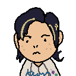
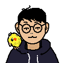

Lae Un is a creative technologist and educator with a passion for turning abstract concepts into playful experiences. They lead product design and development, bringing their experience in both mathematics and the arts to the project.

Se Yeon is a computer scientist and backend developer with industry experience at Microsoft and several startups. His work focuses on building robust infrastructure and applying machine learning to real-world problems. At Klayon Studio, he leads the development of backend systems and technical architecture.